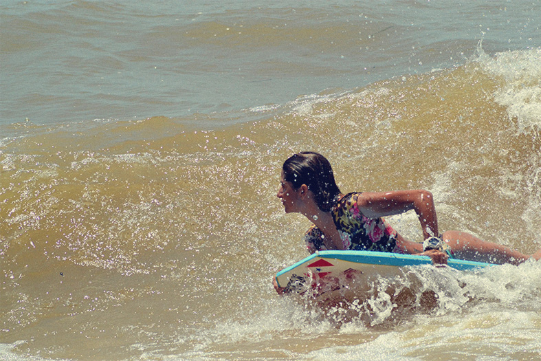

2 min de leitura
Quarta- feira, 02 de setembro- Carona, grana, pouco tempo de onda, equipamento de fotografia para não deixar de registrar as ondas de água doce no norte do Brasil.
É bem a minha cara isso aqui.
Decidi explorar algumas praias de rio no meu Estado. Essa é primeira parte da matéria “Meu mar de água doce”.
O primeiro dia foi na ilha do Mosqueiro, na praia do Marahú, no pico do Paysandu.
As ondas estavam bem pequenas, sem força e pouco vento durante o dia, não deu para aproveitar quase nada, e mesmo assim eu estava ali junto com o fotógrafo Jeremy Dias parceiro do site Craud.net, e mais um amigo que também é bodyboard para fazer o meus primeiros registros para essa temporada.
Às vezes é assim, um dia rola onda, outro não. Mais este ano promete bombar altas ondas na ilha, que, além de ser uma ilha vizinha da capital onde moro, dá para fazer o bate e volta tranquilamente.
- Você deve imaginar… “Ué”!?!? - Como assim Xandinha uma praia de rio que rola onda? - É isso mesmo!
Como fica próximo ao mar, Mosqueiro possui praias com marés e ondas, e tem vários picos para praticar o Surf.
Justamente pelo movimento forte das águas, a ilha se tornou bastante procurada por nós, os surfistas. E as ondas chegam ter até 1,5 m de altura em seus melhores dias (4 á 5 pés).
- Eu estou bastante ansiosa para pegar Mosqueiro funcionando. As ondas de maré me surpreendem. Eu já surfei na praia do Farol, um metrão, buraco, que deu para fazer varias manobras fortes, é fantástico.
A maré vai crescer, e as ondas também. Aguardem nova galeria de fotos em outros picos da ilha do Mosqueiro.
 Ir a lugares e fazer coisas que nunca foram feitas antes - isso e o que significa viverBoas ondas e até a próxima!
Fotos: Jeremy Dias
Conto com o Co-Patrocínio da Seel. Apoios: Bela Rosa | Kpaloa | Craud.net | Amazon Power | Luxo de Sereia.
Veja Mais. Website: Studio Surf.